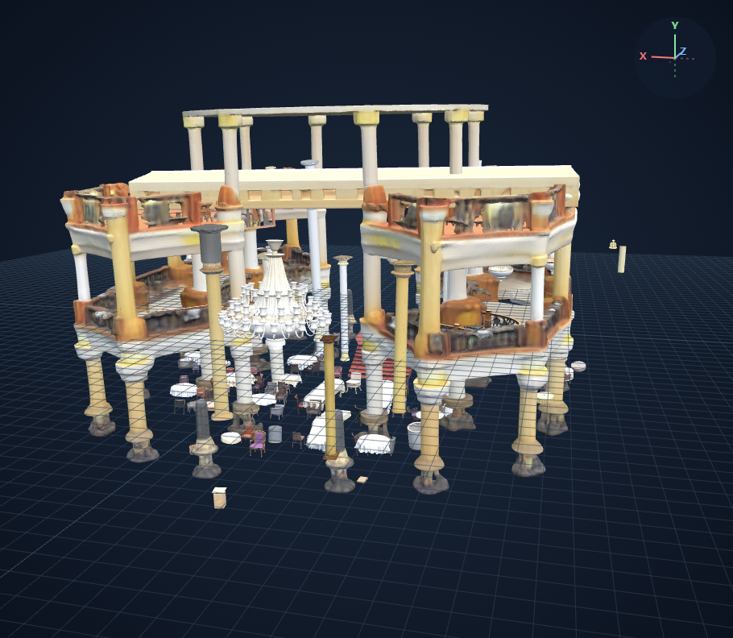
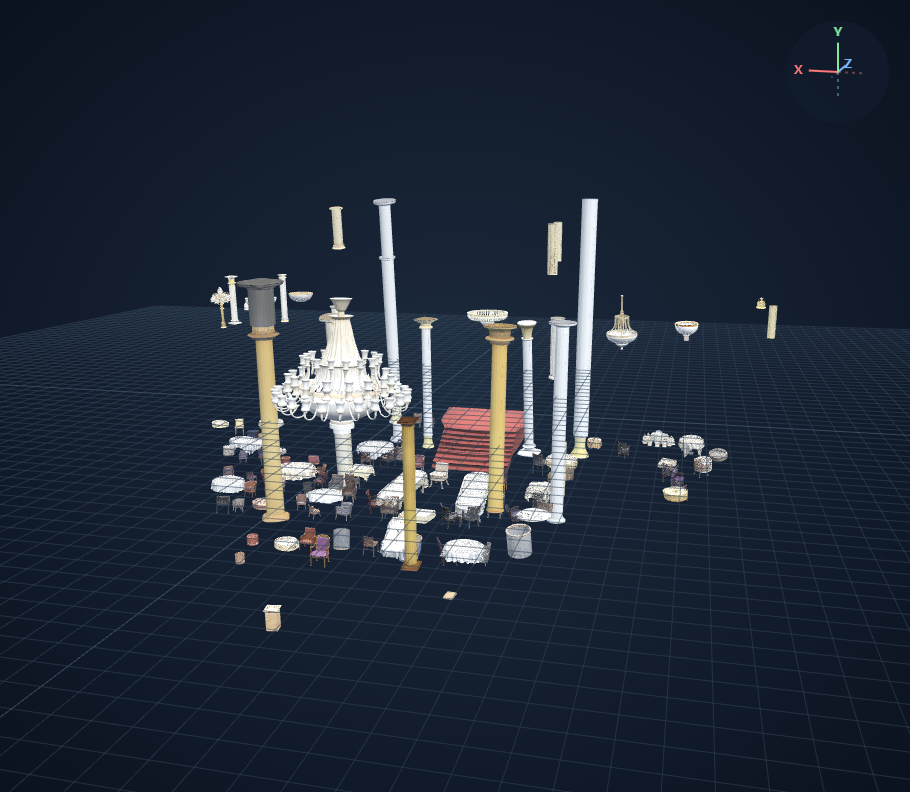

RAM++ 기본값 + Qwen 배경 필터 v1
기존 10장 결과에 실제 적용 · 객체 420 → 372개 · 3D 재생성 없음
동일 카메라 위치·시선으로 비교합니다. 남은 객체의 메시·텍스처·배치는 원본 그대로입니다. 격자는 뷰어 보조선입니다.
house 21 → 8개
제외 태그: carpet, ceiling, ceiling fan, den, furniture, home, living room, room, television
office 26 → 24개
제외 태그: fill, floor, room, wood floor
displaycase 80 → 80개
제외 태그: case
stairhall 27 → 26개
제외 태그: building, carpet, ceiling
sample-01 15 → 10개
제외 태그: dining room, dinning table, floor, room, wood floor
sample-02 44 → 43개
제외 태그: backyard, fire pit
sample-03 24 → 21개
제외 태그: floor, home appliance, kitchen table, mat, room, yoga mat
sample-04 17 → 3개
제외 태그: apartment, carpet, curtain, furniture, glass door, living room, modern, room, slide, window
sample-05 17 → 14개
제외 태그: bed, bedroom, bureau, table, dollhouse, nightstand, room
restaurant 149 → 143개
기존 1번 · 149개 3D 열기 ↗
Qwen 필터 적용 · 143개 3D 열기 ↗
제외 태그: atrium, balustrade, building, carpet, ceiling, cruise ship